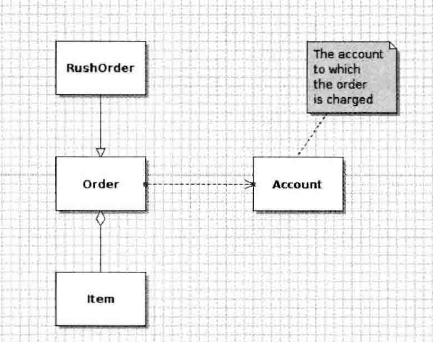
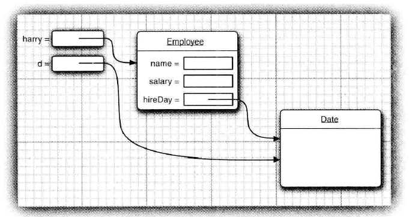
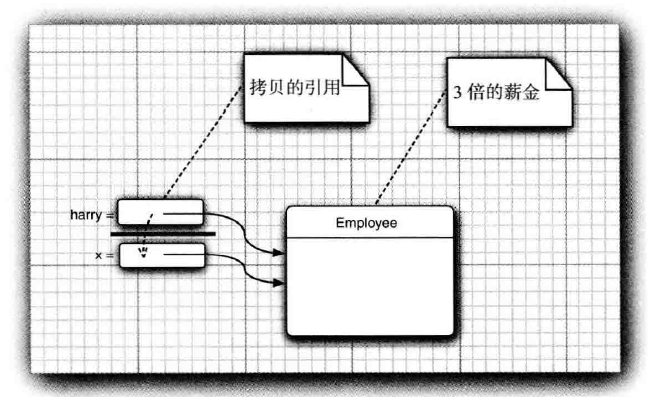

第4章 对象与类
4.1.4 类之间的关系
依赖（uses-a）
一个类的方法操纵另一个类的对象，应尽可能减少依赖，让类之间的耦合度最小（Order对象使用Account对象查看信用状态）
聚合（has-a）
类A的对象包含类B的对象（Order对象包含一些Item对象）
继承（is-a）
类A扩展类B，继承类B（RushOrder类继承Order类）

4.2.1 对象与对象变量
对象与对象变量的区别
1 | Date deadline;//deadline是对象变量，未指向任何对象 |
变量deadline不是一个对象，也没有引用对象，必须首先初始化变量。 可以使用新构造的对象初始化变量，也可以让变量引用一个已存在的对象（这样两个变量引用同一个对象）
注：一个对象变量并没有实际包含一个对象，而仅仅引用一个对象。
在Java中，任何对象变量的值都是对存储在另一个地方的一个对象的引用。new操作符的返回值也是一个引用。
1 | Date deadline = new Date();//表达式new Date()构造了一个Date类型的对象，并且它的值是对新创建对象的引用。这个引用存储在变量deadline中。 |
所有的Java对象都是在堆中构造的
4.3.5 隐式参数与显式参数
在每一个方法中，关键字this表示隐式参数。
4.3.6 封装的优点
不要返回引用可变对象的访问器方法
1 | class Employee { |

如果需要返回一个可变数据域的拷贝，应该使用clone。
1 | class Employee { |
4.3.7 基于类的访问权限
一个方法可以访问所属类的所有对象的私有数据
1 | class Employee { |
4.3.9 final实例域
final实例域必须在构建对象时初始化，且之后不会再被修改。
4.4 静态域
静态域属于类，不属于任何一个独立的对象。
静态方法使用情况：
- 一个方法不需要要访问对象状态，所需参数都是通过显式提供。
- 一个方法只需要访问类的静态域。
4.5 方法参数
Java总是按值调用，方法得到的是所有参数值的一个拷贝，不能修改传递给它的任何参数变量的内容。
方法参数有两种类型：
- 基本数据类型（数字、布尔型）
- 对象引用
一个方法不能修改一个基本数据类型的参数，但可以改变对象引用的值。（方法得到的是对象引用的拷贝，对象引用及其拷贝引用同一个对象，可以由此修改所引用的对象状态）

总结Java中方法参数的使用情况：
- 一个方法不能修改一个基本数据类型的参数
- 一个方法可以改变一个对象参数的状态
- 一个方法不能让对象参数引用一个新的对象
4.7 包
只能使用*导入一个包：
1 | import java.util.*//Ok |
当要使用两个包内同名的类时，将这个具体的类导入。
4.9 文档注释
4.9.2 类注释
类注释必须放在import语句之后，类定义之前。
4.9.3 方法注释
方法注释放在所描述的方法之前。
4.10 类设计技巧
- 一定要保证数据私有（不破坏封装性）
- 一定要对数据初始化
- 不要在类中使用过多的基本类型（用其他的类代替多个相关的基本类型的使用）
- 不是所有的域都需要独立的域访问器和域更改器
- 将职责过多的类进行分解
- 类名和方法名要能够体现它们的职责
- 优先使用不可变的类